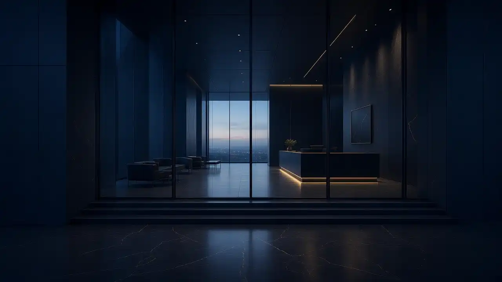

“Atendimento impecável e equipe atenciosa.”— depoimento ilustrativo

Louvor público
4,9
228 avaliações · Exa Places · coleta 04/11/2026
Prova vertical
O que as famílias dizem
Trechos abaixo são depoimento ilustrativo até validação literal das reviews.
“Confiança de anos com a São Lucas.”— depoimento ilustrativo
“Explicaram o tratamento com clareza.”— depoimento ilustrativo
Três pilares
Como a clínica se apresenta texto de exemplo
Clínica completa
Consultas e acompanhamento no endereço da Dona Castorina. texto de exemplo
Equipe presente
Orientação clara em cada etapa. texto de exemplo
Confiança acumulada
Nota 4,9 com 228 avaliações públicas.
Agenda
Horários e contato
Atendimento
Confirme no WhatsApp (51) 3060-1972. texto de exemplo
Emergências
Orientações pelo canal oficial. texto de exemplo
Como chegar
R. Dona Castorina de Azevedo Carvalho, 141
Canoas/RS
WhatsApp confirmado
(51) 3060-1972
Telefone / WhatsApp no mesmo número · coleta 04/11/2026
Perguntas frequentes
Como agendar?
WhatsApp (51) 3060-1972. texto de exemplo
Onde fica?
R. Dona Castorina de Azevedo Carvalho, 141 — Canoas/RS.
Qual a nota?
4,9 com 228 avaliações (Exa Places, 04/11/2026).